As part of my education I've undertaken several projects that involve digital fabrication to achieve precise physical manifestations of digital design. This ranges from utilising digital tools for their replicability to high-precision metal machining to their ability to enable mass customisation. Projects have taken place in both collaborative and independent contexts.
[-] Swarm - Computational Garden
As part of a computational design project, manufactured a full-scale jointing system prototype for a parametric paneling system that attempts to panelise an arbitrary surface with planar hexagons. We used MDF friction joints for lightweight and flexible test jointing, and adapted our geometry to enable material efficiency. We used parametric variation to create optimal joint fits.
Collaborative with Jonathan Cheng, Shariwa Sharada, and Eric Chen.
[-] Model - Overview
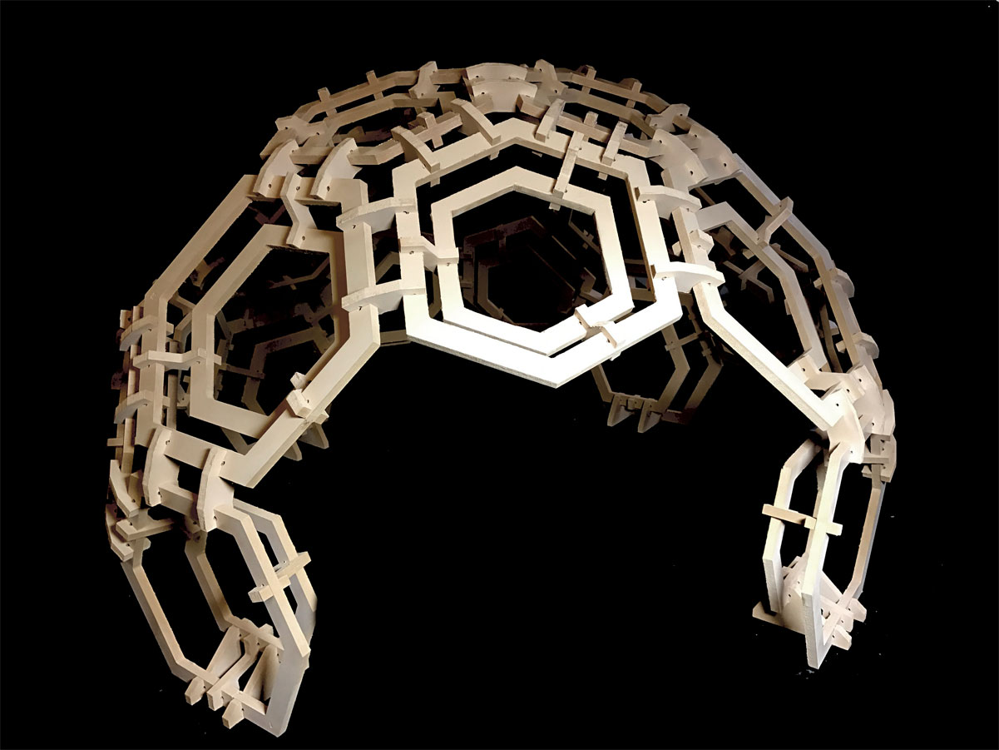
[-] Model - Surface Patterning
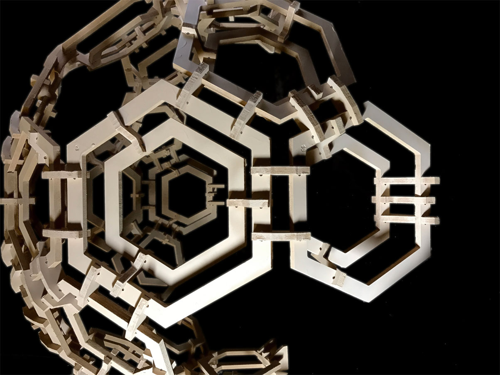
[-] Drawings and Cut Sheet
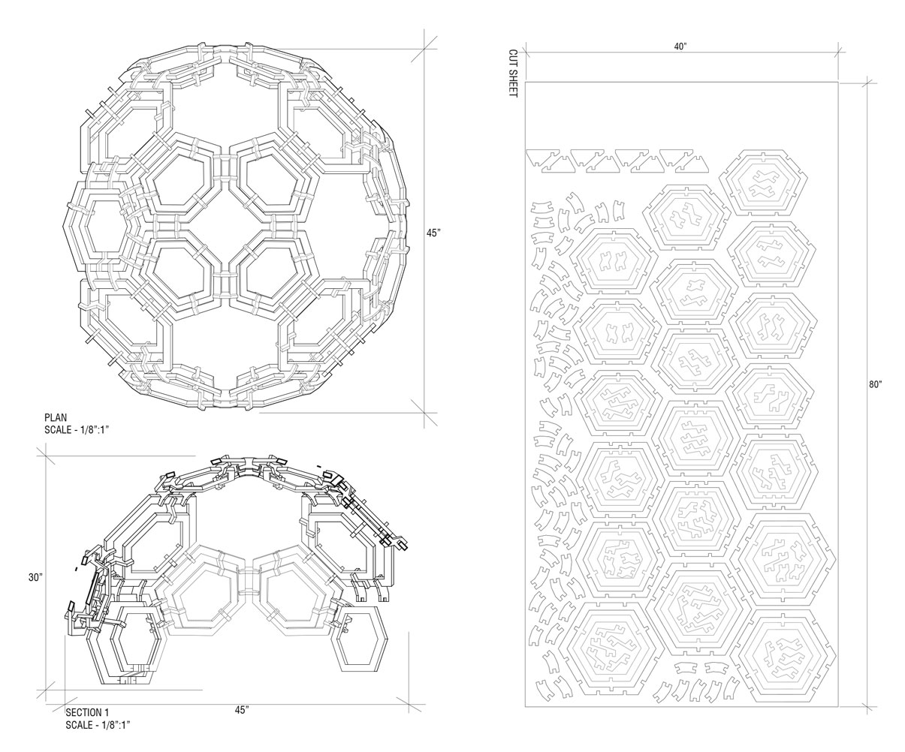
[-] ToolObject
Tasked with creating a machine for holding traditional tools that interacts with tools in a novel way, I developed and prototyped a modular mechanism that can be moved and locked in either an opened or closed state. The tools interact with a custom-made module that fits on identical linkage, allowing easy adaptibility to include new tools or variations in future versions. I focused on designing for manufacturing, utilizing CNC and laser cutting throughout both the initial and final prototyping processes to achieve a simple, durable result.
[-] Open Layout
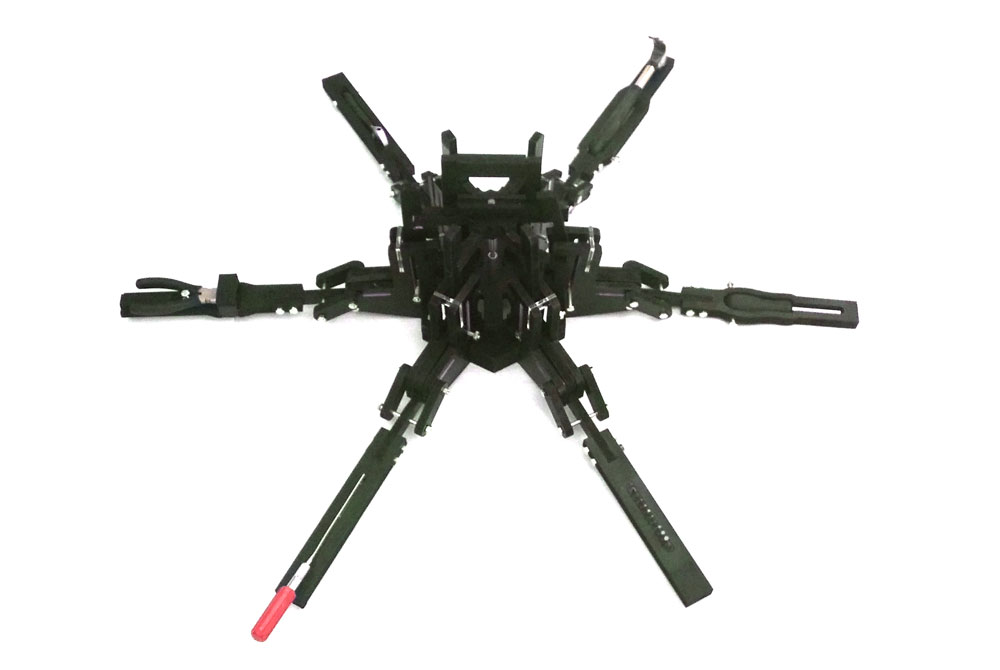
[-] Interior
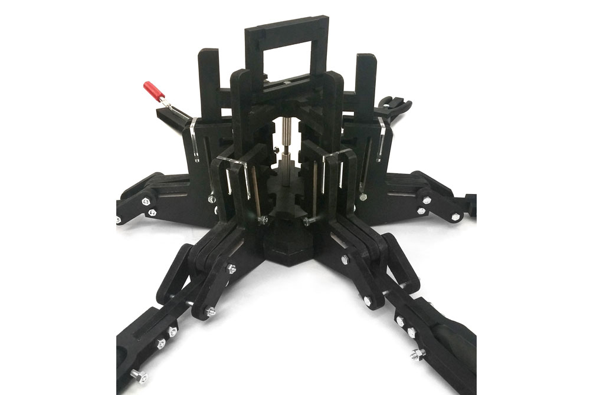
[-] Closed Layout
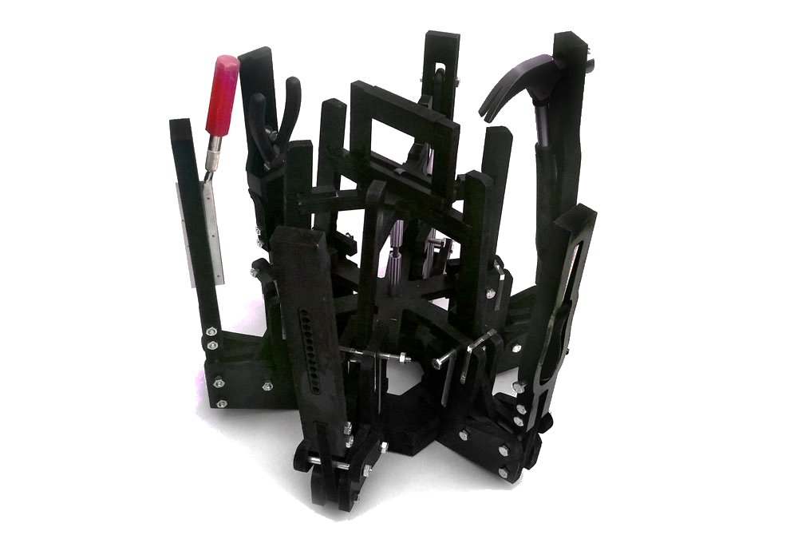
[-] Faceless - Vacuum Forming
In an experiment using Autodesk's 123D Catch mobile application, I scanned in a mesh of a face, created a script to optimise it for CNC routing in MDF, and milled out face-positives that could be vacuum-formed on to create masks.
[-] 3D Scanned Rough Mesh
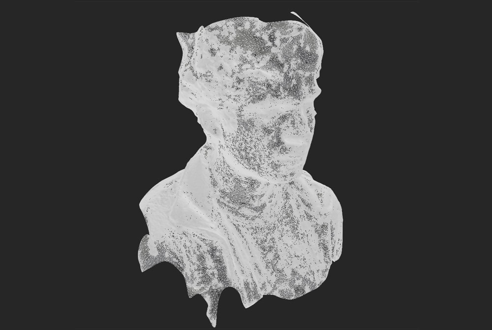
[-] Face Positive Toolpath
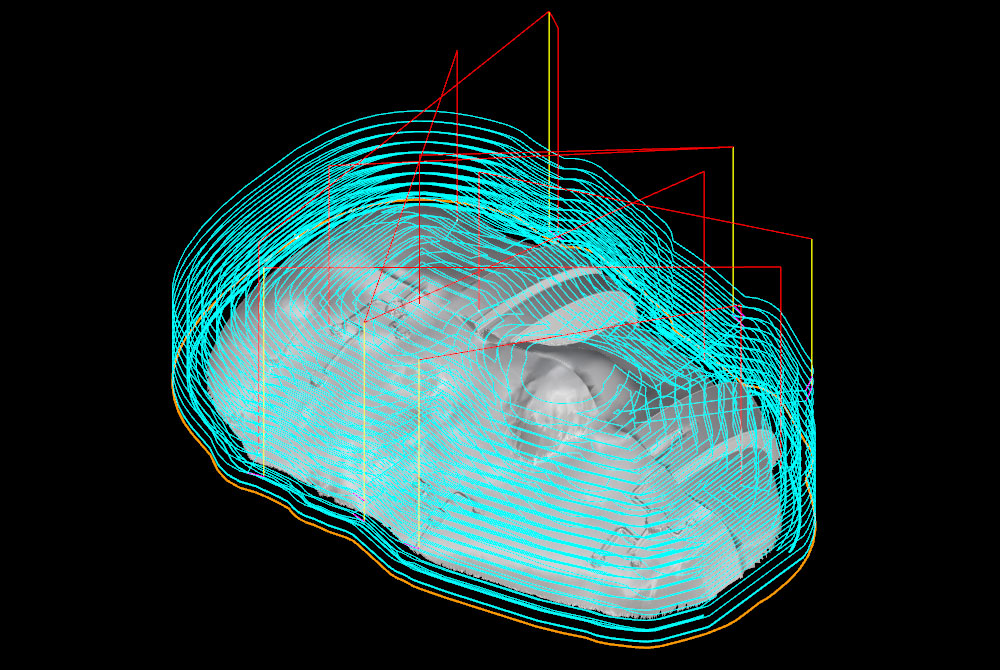
[-] Vacuum-Formed Masks
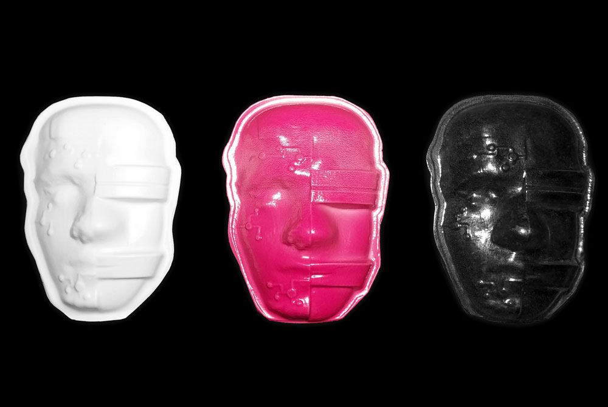
[-] FRC Gearboxes
As part of FIRST Robotics Competition Team 192 (GRT), I led the specialised machining division between 2014 and 2015. As part of this, I operated a 3-axis free-standing mill and manufactured high-precision components for custom gearboxes and other robot systems, primarily out of aluminum. I created an improved workholding and machining workflow to speed up the production process, make it easier to execute, and improve tool life.
Collaboration with Rauhul Varma (Gearbox Design Lead 2014), Nicole Nadim (Gearbox Design Lead 2015), Michael Dresser (2015)
Independent, Fall 2016
[-] Custom Wheels, Aluminum, 3-Axis
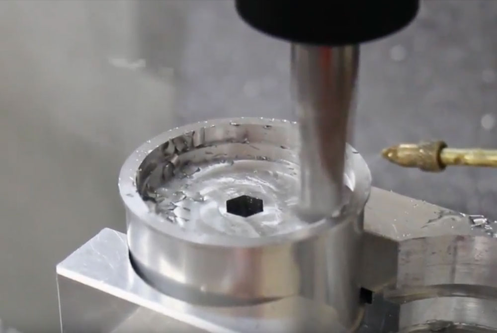
[-] Anodized Motor Plate, Rauhul 2014
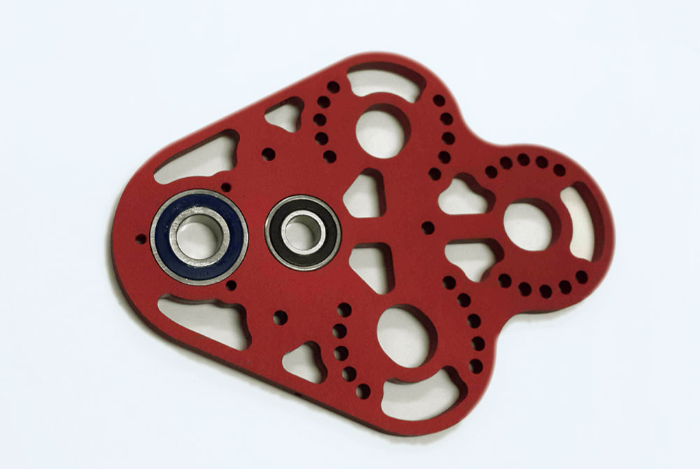
[-] Assembled Gearbox, Nicole 2015
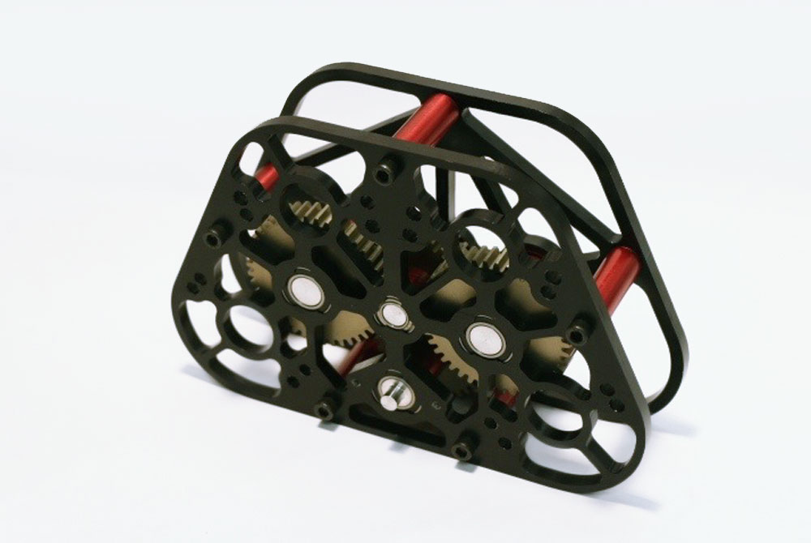
made with love and html. © Dan Cascaval 2017.